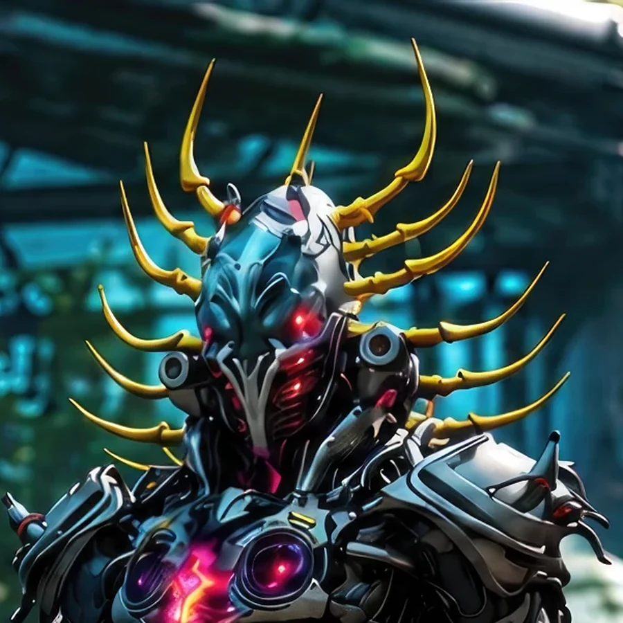
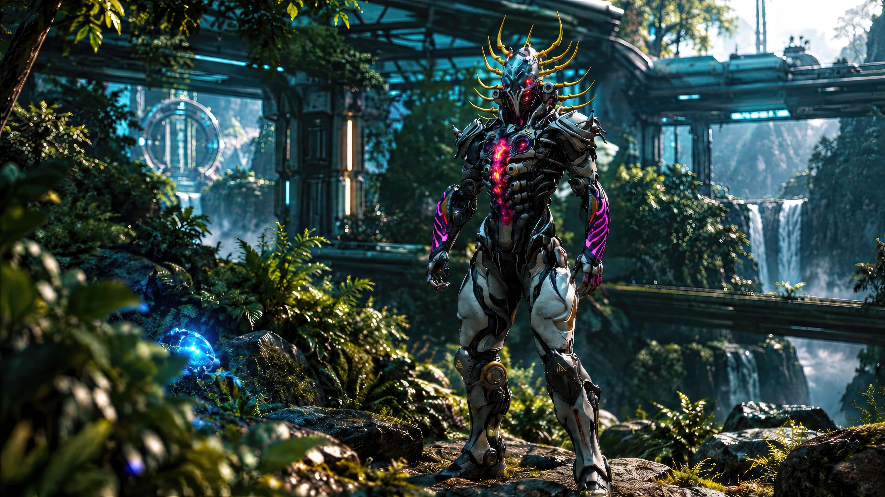

Field Observation
Gudial left a blue alien energy sphere glowing among rocks at the lower left on Earth 1. The sphere seeds hostile alien infrastructure inside the overgrown sanctuary.
 ©
©
GENEZYS ARCHIVE · Synthbot
Shimmer Vessel
Identity & combat record
Archive node 01 / 04

Archive record
Gudial is the Syndicate's most guarded secret: a Synthbot that can read and rewrite living code. The DNA Match strips an enemy's energy to nothing, and hits even harder against those who hide behind a shield. What the Syndicate intends to do with the DNA of Earth 1, nobody on our side knows yet.
Combat signature
Rewrites genetic code on contact: Sets the target's Cosmara to 0 and deals 100 damage. If the shield was activated deals 150 damage instead.
Genezys 04:09 ™&©2026LEGIONS
Field intelligence
Archive node 02 / 04
FIELD REPORT // HOSTILE ENERGY SPHERE

Field Observation
Gudial left a blue alien energy sphere glowing among rocks at the lower left on Earth 1. The sphere seeds hostile alien infrastructure inside the overgrown sanctuary.
Environment
Object Analysis
Key Findings
Restricted visual records
Archive node 03 / 04

Motion archive
Archive node 04 / 04
Motion record not yet recovered